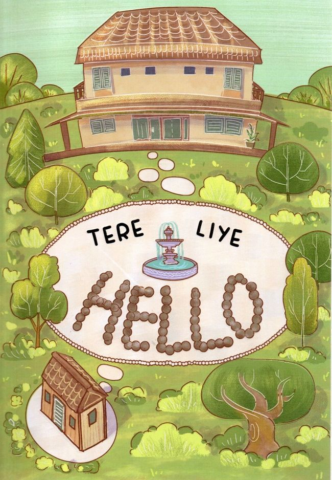

Rp150.000
Negeri 5 Menara karya Ahmad Fuadi adalah novel inspiratif yang menceritakan perjuangan enam santri di Pondok Madani dengan impian besar menembus dunia. Dengan semboyan “Man jadda wajada”, kisah ini menekankan semangat belajar, persahabatan, dan keyakinan bahwa kerja keras mampu mengantarkan pada kesuksesan.

Rp90.000
Hello karya Tere Liye adalah novel ringan dan hangat yang mengisahkan pertemuan sederhana dua anak muda yang perlahan menumbuhkan makna tentang persahabatan, ketulusan, dan proses memahami diri sendiri. Dengan bahasa yang santai namun menyentuh, novel ini mengajak pembaca menikmati cerita keseharian yang penuh pesan tentang kehidupan dan perasaan manusia.
.jpg)
Rp100.000
Laut Bercerita karya Leila S. Chudori bercerita tentang Atikah, seorang jurnalis muda di Paris, yang mencoba mengungkap misteri hilangnya ayahnya, Hendra Karsono, aktivis yang ditangkap saat awal Orde Baru. Novel ini menyoroti peristiwa politik Indonesia pasca-G30S/PKI, dampaknya pada kehidupan pribadi, dan perjuangan generasi muda untuk memahami masa lalu. Melalui kilas balik dan surat-surat, cerita mengeksplorasi tema memori, identitas, kehilangan, dan pencarian kebenaran. Gaya narasinya puitis dan reflektif, dengan alur yang berpindah antara masa kini Atikah dan masa lalu ayah serta teman-temannya, menghadirkan gambaran emosional sekaligus sejarah yang kuat.